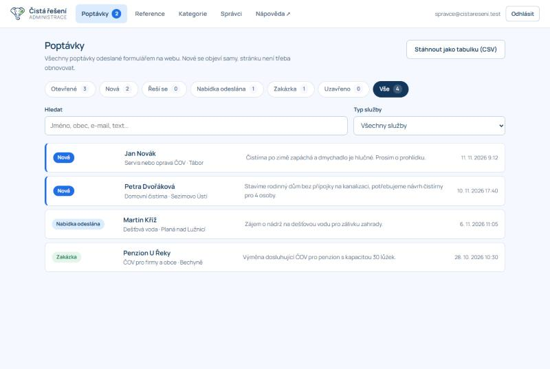
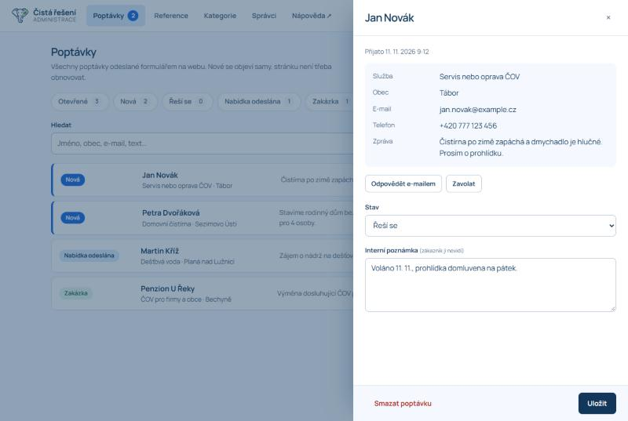
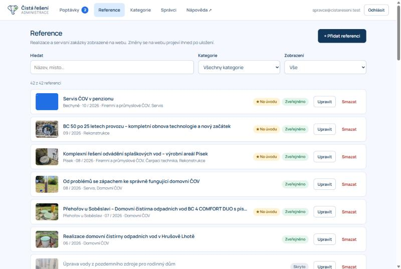
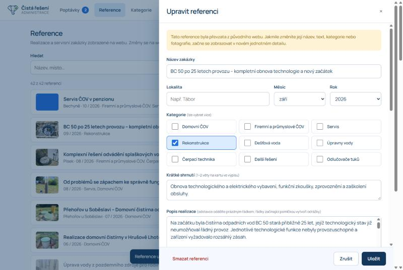
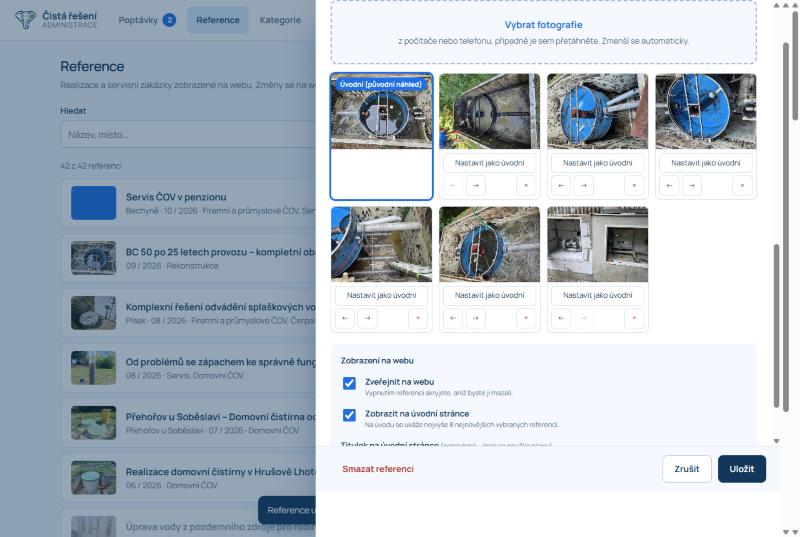
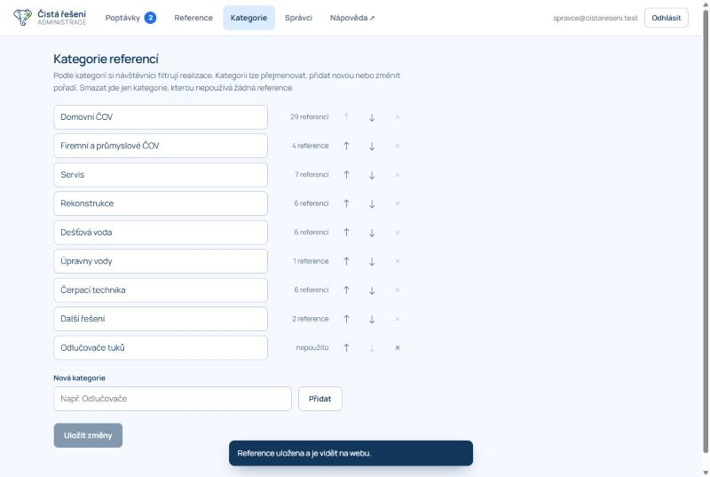
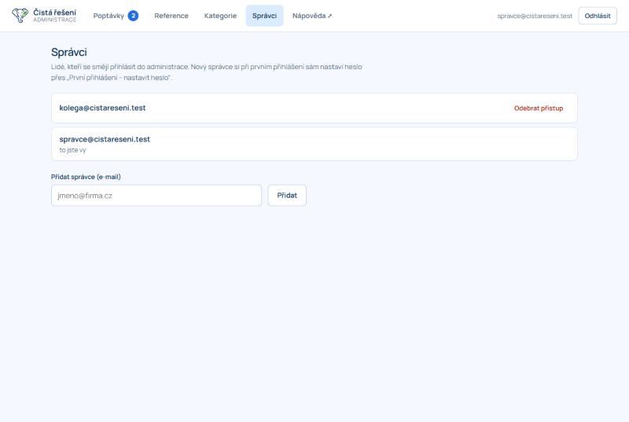
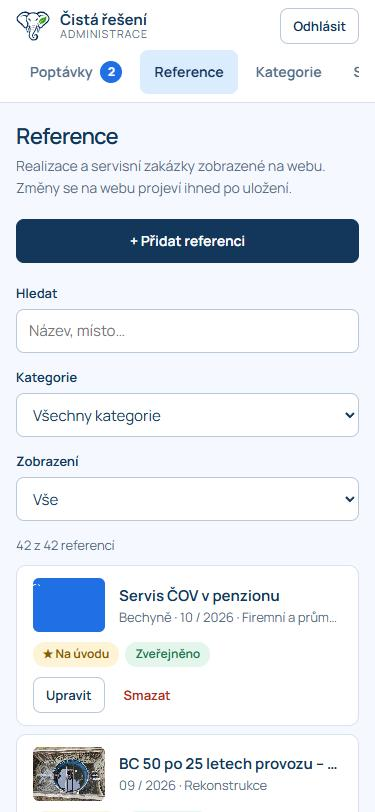

Manuál administrace webu
Administrace slouží k tomu, abyste si web Čistá řešení spravovali sami: přidávali realizace a servisní zakázky s fotografiemi a měli přehled o poptávkách z webu. Nic se nedá „rozbít“ – vše, co uložíte, můžete znovu upravit.
1. K čemu administrace slouží
| Část | Co v ní uděláte |
|---|---|
| Poptávky | Vidíte každou poptávku odeslanou formulářem na webu, měníte její stav a píšete si k ní interní poznámky. |
| Reference | Přidáváte, upravujete, skrýváte a mažete realizace a servisní zakázky včetně fotografií. Vybíráte, které se ukážou na úvodní stránce. |
| Kategorie | Spravujete seznam kategorií, podle kterých si návštěvníci reference filtrují. |
| Statistiky | Vidíte návštěvnost webu a počty poptávek za posledních 30 dní. |
| Správci | Určujete, kdo se do administrace a do CRM smí přihlásit. |
| CRM | Samostatná aplikace pro evidenci zákazníků, zařízení, zakázek a servisních návštěv. Otevřete ji odkazem CRM v horní liště. |
Adresa administrace: adresa webu + /admin/. Odkaz „Administrace“ najdete také úplně dole v patičce webu.
2. Přihlášení
První přihlášení
- Otevřete administraci a klikněte na První přihlášení – nastavit heslo.
- Zadejte e-mail, kterému byl přístup přidělen, a dvakrát nové heslo (alespoň 10 znaků). Heslo si volíte sami, nikdo jiný ho nezná.
- Na e-mail vám přijde zpráva s potvrzovacím odkazem. Klikněte na něj. Pokud zprávu nevidíte, podívejte se do nevyžádané pošty.
- Vraťte se do administrace a klikněte na Mám potvrzeno, pokračovat.
Další přihlášení
Zadáte e-mail a heslo. Na vlastním počítači nebo telefonu zůstanete přihlášeni, dokud se sami neodhlásíte tlačítkem Odhlásit. Na cizím zařízení se vždy odhlaste.
Zapomenuté heslo
Na přihlašovací obrazovce klikněte na Zapomenuté heslo, zadejte e-mail a v doručené zprávě si nastavte heslo nové.
Hlášení „Tento účet nemá přístup“ znamená, že váš e-mail není na seznamu správců. O přidání požádejte kolegu, který přístup má (viz Správci).
3. Poptávky
Každá poptávka odeslaná z webu se tu objeví během několika vteřin, stránku není potřeba obnovovat. U záložky Poptávky svítí počet nových.

Tři typy poptávek
Formulář na webu má tři záložky a u každé poptávky v administraci vidíte, o který typ jde:
| Typ | Co zákazník vyplní |
|---|---|
| Nová realizace | Požadované řešení, lokalitu, popis záměru a kontakt. Může přiložit projektovou dokumentaci. |
| Servis a opravy | Lokalitu, výrobce a typ ČOV, popis problému a kontakt. Může přiložit fotografie. |
| Pravidelný servis | Program STANDARD nebo PREMIUM, výrobce a typ technologie, lokalitu a kontakt. |
Přílohy (fotografie, PDF) najdete v detailu poptávky pod údaji zákazníka. Otevřou se po kliknutí a jsou dostupné jen přihlášeným správcům. Když poptávku smažete, smažou se i její přílohy.
Stavy poptávky
| Stav | Kdy ho použít |
|---|---|
| Nová | Právě přišla, nikdo se jí zatím nevěnoval. |
| Řeší se | Se zákazníkem jste v kontaktu, domlouváte prohlídku nebo zjišťujete podrobnosti. |
| Nabídka odeslána | Zákazník dostal nabídku a čekáte na odpověď. |
| Zakázka | Z poptávky vznikla zakázka. |
| Uzavřeno | Poptávka skončila bez zakázky (zákazník si to rozmyslel, nešlo vyhovět apod.). |
Filtr Otevřené ukazuje vše, co ještě není dořešené (Nová, Řeší se, Nabídka odeslána). To je výchozí pohled.
Práce s poptávkou
- Klikněte na řádek poptávky. Otevře se detail se vším, co zákazník vyplnil.
- Tlačítkem Odpovědět e-mailem otevřete novou zprávu ve svém poštovním programu, tlačítkem Zavolat vytočíte číslo (na telefonu).
- Změňte Stav a do Interní poznámky si napište, co jste domluvili. Poznámku vidí jen správci, zákazník nikdy.
- Klikněte na Uložit.

Hledání, filtr podle služby a export
- Hledat prohledává jméno, obec, e-mail, telefon, text zprávy i vaše poznámky.
- Typ služby zobrazí jen poptávky na vybranou službu (servis, domovní ČOV, dešťová voda…).
- Stáhnout jako tabulku (CSV) uloží všechny poptávky do souboru, který otevřete v Excelu.
Mazání poptávek. Poptávku lze smazat tlačítkem Smazat poptávku v detailu. Smazání je nevratné. Vyřízené poptávky obvykle stačí přepnout do stavu Zakázka nebo Uzavřeno.
4. Reference
Reference jsou realizace a servisní zakázky, které se zobrazují na stránce Realizace, v galerii a (vybrané) na úvodní stránce. Každá změna se na webu projeví hned po uložení.

Přidání nové reference
- Klikněte na + Přidat referenci.
- Vyplňte Název zakázky (povinné), Lokalitu a Měsíc a rok realizace.
- Zaškrtněte jednu nebo více Kategorií.
- Napište Krátké shrnutí (jedna až dvě věty, zobrazí se na kartě ve výpisu) a Popis realizace.
- Vyplňte Typ technologie (např. BC 4 OPTIMA) a podle potřeby Další parametry – například Kapacita: 4 EO.
- Nahrajte Fotografie (viz další kapitola).
- Klikněte na Uložit. Reference je okamžitě na webu.

Jak psát popis
- Odstavce oddělte prázdným řádkem.
- Řádky začínající pomlčkou a mezerou („- výměna dmychadla“) se na webu zobrazí jako odrážky.
- Pokud shrnutí nevyplníte, použije se začátek popisu.
Úprava, skrytí a smazání
- Upravit otevře stejný formulář s vyplněnými údaji.
- Skrytí: ve formuláři vypněte přepínač Zveřejnit na webu. Reference zmizí z webu, ale v administraci zůstane a můžete ji kdykoli vrátit. Tohle je bezpečnější než mazání.
- Smazat odstraní referenci i s fotografiemi natrvalo. Administrace se vždy nejdřív zeptá.
Reference převzaté z původního webu. Původních 41 realizací má na webu vlastní, ručně připravené stránky. Jakmile u takové reference změníte název, text, kategorie nebo fotografie, začne se zobrazovat v jednotném detailu stejném jako nové reference. Formulář na to upozorní žlutým pruhem.
5. Fotografie
- Ve formuláři reference klikněte na Vybrat fotografie. Na telefonu se nabídne galerie nebo fotoaparát, na počítači složka se soubory. Fotografie můžete na počítači také přetáhnout myší do modrého pole.
- Vybrat lze více fotografií najednou (nejvýše 60 na jednu referenci).
- Fotografie se samy zmenší na vhodnou velikost – není potřeba je předem upravovat.
- Nahrají se až po kliknutí na Uložit. Podle počtu a rychlosti připojení to může chvíli trvat; průběh vidíte vedle tlačítka.

| Tlačítko | Co dělá |
|---|---|
| Nastavit jako úvodní | Tato fotografie se ukáže na kartě ve výpisu a nahoře v detailu reference. |
| ← → | Změní pořadí fotografií v galerii. |
| × | Odebere fotografii. Z webu zmizí po uložení. |
Tip. Na úvodní fotografii se nejlépe hodí snímek na šířku, kde je hotové dílo dobře vidět. Fotografujte bez osob a registračních značek, případně se souhlasem zákazníka.
6. Úvodní stránka
V části „Řešení, která už fungují“ na úvodní stránce se zobrazují vybrané reference.
- Otevřete referenci a zapněte přepínač Zobrazit na úvodní stránce.
- Volitelně vyplňte Titulek na úvodní stránce – krátkou, výstižnou větu. Když ho nevyplníte, použije se název zakázky.
- Uložte.
Na úvodní stránce se ukáže nejvýše 8 vybraných referencí, seřazených od nejnovější podle data realizace. Doporučujeme mít vybrané 4 až 6 a čas od času je obměnit. V seznamu referencí je poznáte podle štítku ★ Na úvodu; filtr Zobrazení → Na úvodní stránce ukáže jen je.
7. Kategorie

- Přejmenování: přepište název v políčku.
- Nová kategorie: napište název do pole Nová kategorie a klikněte na Přidat.
- Pořadí: šipky ↑ ↓ určují pořadí tlačítek filtru na webu. Pokud má reference více kategorií, jako hlavní (na štítku fotografie) se ukáže ta, která je v seznamu výš.
- Smazání: křížek je dostupný jen u kategorie, kterou žádná reference nepoužívá.
Změny se projeví až po kliknutí na Uložit změny. Na webu se ve filtru zobrazují jen kategorie, ve kterých je aspoň jedna zveřejněná reference.
8. Správci

- Přidání: zadejte e-mail kolegy a klikněte na Přidat. Kolega si pak sám nastaví heslo postupem První přihlášení. Žádné heslo mu neposíláte.
- Odebrání: tlačítkem Odebrat přístup. Dotyčný se od té chvíle do administrace nedostane.
- Sami sebe odebrat nelze, aby administrace nezůstala bez správce.
Bezpečnost. Každý správce má vlastní e-mail a vlastní heslo. Hesla nesdílejte. Když někdo z firmy odejde, odeberte mu přístup.
9. Práce z telefonu
Administrace funguje v prohlížeči telefonu stejně jako na počítači. Hodí se hlavně pro dvě věci:
- Fotografie přímo ze stavby: otevřete referenci, klepněte na Vybrat fotografie a vyberte snímky z galerie nebo je rovnou vyfoťte.
- Rychlá reakce na poptávku: v detailu poptávky klepněte na Zavolat.
Pro pohodlný přístup si stránku administrace přidejte na plochu telefonu (v nabídce prohlížeče „Přidat na plochu“).

10. Statistiky
Záložka Statistiky ukazuje posledních 30 dní:
- Návštěvy – kolikrát někdo přišel na web odjinud (z vyhledávače, odkazu, přímým zadáním adresy).
- Zobrazení stránek – kolik stránek si návštěvníci celkem prohlédli a které části webu je zajímají.
- Poptávky – kolik poptávek přišlo, rozdělené podle typu.
- Poptávek na 100 návštěv – orientační ukazatel, jak dobře web přivádí zákazníky.
Jak se měří. Web nepoužívá cookies ani služby třetích stran. Počítají se jen anonymní denní součty, proto nejde o přesná čísla: nezapočítávají se roboti ani návštěvníci, kteří mají v prohlížeči zapnuté „nesledovat“. Stačí to na sledování vývoje v čase; pro podrobnější analytiku (zdroje návštěv, klíčová slova) lze později doplnit specializovaný nástroj.
11. CRM: zákazníci a zakázky
CRM je samostatná aplikace na adrese adresa webu + /crm/ (odkaz CRM v horní liště administrace). Přihlašujete se stejným e-mailem a heslem jako do administrace. Je navržená hlavně pro telefon: na telefonu si ji přidejte na plochu (v nabídce prohlížeče „Přidat na plochu“).
| Část | K čemu slouží |
|---|---|
| Přehled | Co je potřeba udělat dnes: nové poptávky z webu, úkoly po termínu, blížící se servisy a otevřené zakázky. |
| Zakázky | Každá zakázka prochází fázemi Poptávka → Nabídka → Naplánováno → Hotovo → Fakturováno (případně Nerealizováno). Fázi posunete jedním tlačítkem. |
| Zákazníci | Kontakty s tlačítky Zavolat, E-mail a Navigovat. U zákazníka vidíte jeho zařízení, zakázky, úkoly a historii poznámek. |
| Servis | Zařízení se servisním programem seřazená podle termínu dalšího servisu. Po návštěvě stačí klepnout na „Servis proveden“ a termín se sám posune (STANDARD o 6 měsíců, PREMIUM o 3 měsíce). |
| Více | Uživatelé, export zákazníků do tabulky, odhlášení. |
Z poptávky zakázka
- Na Přehledu otevřete novou poptávku z webu.
- Klepněte na Převést na zákazníka a zakázku. Pokud zákazníka se stejným e-mailem nebo telefonem už máte, zakázka se přiřadí k němu; jinak vznikne nový.
- Zakázka se založí ve fázi Poptávka a poptávka na webu se označí jako „Řeší se“.
Pravidelný servis krok za krokem
- U zákazníka přidejte Zařízení (výrobce, typ, umístění) a vyberte servisní program.
- Vyplňte datum dalšího servisu. Zařízení se objeví v části Servis.
- Tlačítkem Naplánovat si z termínu uděláte úkol, který uvidíte na Přehledu.
- Po návštěvě klepněte na Servis proveden. Zapíše se do historie zákazníka a nastaví se další termín.
Kdo má do CRM přístup. Stejní lidé jako do administrace – spravujete je v administraci v záložce Správci.
Ukázkový přístup
Když chcete CRM někomu jen předvést, přidejte mu v záložce Správci e-mail se zaškrtnutou volbou Jen ukázkový přístup do CRM. Takový účet:
- vidí v CRM pouze smyšlené zákazníky, zakázky a poptávky (nahoře svítí „Ukázkový režim“),
- nedostane se ke skutečným zákazníkům, poptávkám, přílohám ani ke správě webu,
- heslo si nastaví sám v CRM přes „První přihlášení“ a e-mail nepotvrzuje.
Co ukázkový uživatel v ukázce změní, vidí i ostatní ukázkoví uživatelé; skutečných dat se to netýká.
12. Když něco nejde
| Co se děje | Co zkusit |
|---|---|
| Nejde se přihlásit, „E-mail nebo heslo nesouhlasí“ | Zkontrolujte překlepy a velká písmena v hesle. Případně použijte Zapomenuté heslo. |
| Nepřišel potvrzovací e-mail | Podívejte se do nevyžádané pošty. Na obrazovce potvrzení klikněte na Poslat zprávu znovu. |
| „Tento účet nemá přístup“ | Váš e-mail není na seznamu správců. Požádejte kolegu s přístupem, ať vás přidá. |
| Fotografii se nepodařilo načíst | Některé formáty (například HEIC z iPhonu otevřený na počítači) prohlížeč nepřečte. Uložte snímek jako JPEG, nebo ho nahrajte přímo z telefonu. |
| Ukládání reference trvá dlouho | Nahrává se hodně fotografií nebo je pomalé připojení. Nechte okno otevřené, průběh je vidět vedle tlačítka Uložit. |
| Změna není na webu vidět | Obnovte stránku webu (klávesa F5). Zkontrolujte, že je u reference zapnuté Zveřejnit na webu. |
| „Něco se nepovedlo“ nebo „Služba je dočasně nedostupná“ | Zkontrolujte připojení k internetu a akci zopakujte. Pokud potíže trvají, kontaktujte správce webu. |
S čímkoli dalším – úpravy textů a vzhledu webu, nové funkce, technické potíže – se obraťte na dodavatele webu.